【サカつく2026】カウンター強化が止まらない!?新SP「ラファエル・レオン」のピックアップSP選手スカウトは引くべき？新SP選手4名を徹底評価
今回の4人は全員カウンター。そして最高評価は、まさかの銀スキル・ヌーノ・メンデス。ポルトガル編成の最強を狙うべきか、それともプレミアムSPを優先すべきか。手持ちと投資額で結論は変わります。
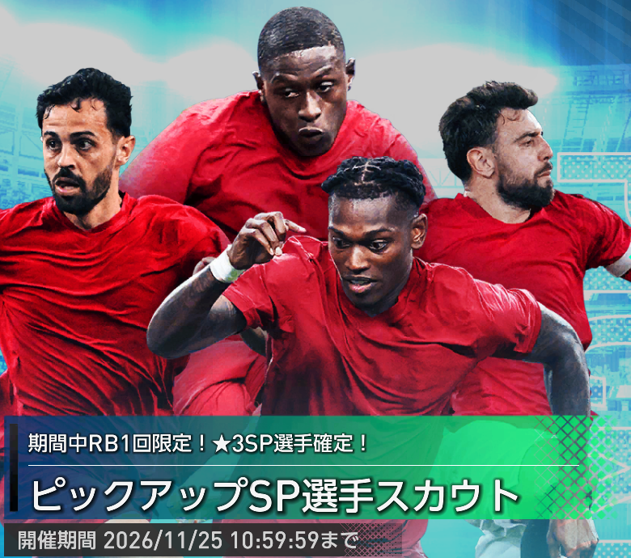
レオンを手に入れれば、ポルトガルの金フォメコンは一気に完成へ近づきます。でも、本当に今回の4人を全力で追うべきでしょうか。今回の注目点は「新戦力の強さ」より、「プレミアムSPの必須枠を確保したうえで、どこまで上積みを狙うか」です。
みんなは今回のガチャ引く？
ガッツリ狙う？ 毎日の100RBにする？ みなさんの判断も教えてください。
先に結論｜引きたい、でも全力ではない
カウンターを強化したいなら「できれば引きたい」。ただし、基本はプレミアムSPを優先し、今回のガチャは手持ち次第です。
確保する理由
ポルトガル金フォメコン「セレソン・ダス・キナス’26」の条件を担うレオンとヌーノ。特にポルトガル国籍で最強編成を目指す人には欲しい2名です。
今すぐ引き切らない理由
プレミアムSPのネルソン・セメドとヴィティーニャが実質的な優先枠。手持ちに代用選手がいるなら、今回の追いかけ過ぎは禁物です。
クリスティアーノ・ロナウド（2026）のプレミアムSPスカウトをスルーした監督なら、今回もスルーでOK。逆にポルトガル染めへ本気で乗り換えるなら、4人の獲得より先にコンボ完成に必要な条件を確認したいです。
ガチャの開催期間と注目ポイント
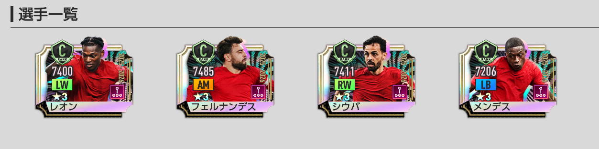
- 開催期間：2026年11月11日（水）メンテナンス終了後〜11月25日（水）10:59。
- 通常の★3提供割合：5％。今回の新SP4名がピックアップ対象。
- ほかの★3排出対象：2026年10月14日までに登場したSP選手（イブラヒマ・コナテまで）。
- 通常タブ：1日1回限定100RB、および300GB／3000GBのスカウトは★3提供割合5％でピックアップあり。
- RB限定の1回限り★3確定10連：★3確定なのは1枠であり、ピックアップ選手が確定するわけではない。1〜9枠目の★3にはピックアップあり。
- 開催後：対象SPが次回以降の通常SPスカウトや期間限定ピックアップへ追加される場合があるものの、追加は確約されていません。
- スカウトメダル：期間終了後、今回のピックアップSP選手スカウトメダルは1枚につきSP選手スカウトメダル1枚に変換。
最大の判断材料は金フォメコン「セレソン・ダス・キナス’26」
今回の新SP4名を評価するうえで無視できないのが、ポルトガル国籍を増やすほど補正が伸びるカウンターの金フォメコンです。4-3-3Bで、突破力・タックル・マーク・コンタクトが各80％アップ。さらにフィールド上のポルトガル選手1人につき対象能力が追加で2％アップします。
セレソン・ダス・キナス’26
発動条件を満たす4枠と、ポルトガル人数を増やすメリットを区別して考える。
以下の4枠に指定プレースタイルの選手を起用することが条件。指定選手本人でなければ発動しないわけではありません。
特にRBの攻撃的FBⅢ、DMのパサーⅢは現在入手可能なSPからの代用が難しく、セメドとヴィティーニャの確保を先に考えたい理由になっています。今回のレオンとヌーノは条件に合うものの、枠を埋めるだけなら代用が存在します。
金フォメコンの発動条件を詳しく見る「レ・ブルー’98」から乗り換えて、どれだけ伸びるか？
手持ちの日本代表SP選手などでカウンターを強化し、すでに「レ・ブルー’98」を使っている監督も多いはず。今使っているチームを捨ててまで、ポルトガルへ舵を切る価値があるでしょうか。
差は5,763。フォメコン・ポリシー補正を含む17項目の実数値合計による比較。
数字だけなら新編成が優位です。ただし、この差を得るには複数のSPを集める必要がある。約5,800の上積みにどこまでリソースを投入するかは、自分の熱量と手持ち次第です。
さらに、当サイトの現行「レ・ブルー’98」最強編成例にはクリスティアーノ・ロナウド（2026）、ネルソン・セメド、ヴィティーニャは採用されていますが、今回の新4名は含まれていません。だからこそ、両編成に使い回せるプレミアムSPの優先度が高いと考えます。
※上記は選手の最大強化時の詳細能力から算出した補正後のサイト内スコアで、ゲーム画面の「チーム総合力」の表示値とは異なります。今後の選手追加などで変動します。
提供割合｜★3確定でもピックアップ確定ではない
100RB限定1回の画面では、★3全体の提供割合は5.000％。新SP4名はそれぞれ1.000％と表示されています。4名合計で4.000％ですが、欲しい1人を引ける確率はあくまで1.000％です。
一方、3000RBの★3確定10連における確定枠（10回中1回）は★3が100.000％ですが、画像では新SP各1.123％。つまり確定枠でもピックアップ確定ではない。この違いは勘違いしやすいポイントです。
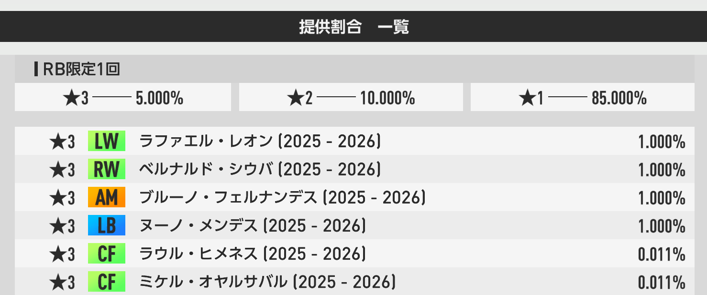
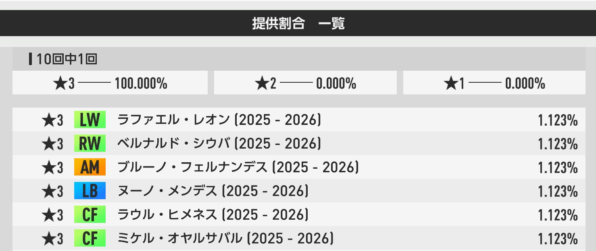
新SP4名のおすすめ度ランキング
性能だけでなく、フォメコンへの重要度・代用候補・別の編成でも使えるか・今回の獲得コストを含めて評価しています。最大総合力の順位とは一致しません。
新SP選手4名を徹底評価
選手カード、スキル、最大強化時の能力を順番に見ていきます。「強いか」だけでなく、実際に手持ちの誰と入れ替えるのかが判断のポイントです。
ラファエル・レオン
フォメコンの左翼を埋める本命。ただし代役は想像以上に多い。
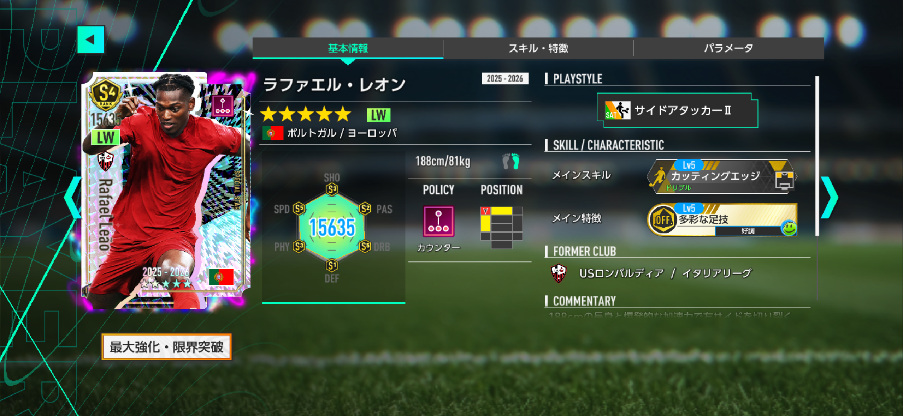
能力・スキルのポイント
6カテゴリは詳細17項目の合計。画像の能力値は所持特徴の発動時の数値で、上の最大総合力・実戦の補正後スコアとは別です。
- 多彩な足技金／発動条件：好調
- 高速のボールタッチ銀／発動条件：好調
- 力強いフィニッシュ銅／発動条件：絶好調
スキル・詳細パラメータ画像を表示 2枚
ソニオTVの評価
「セレソン・ダス・キナス’26」を完成させたいなら、真っ先に目が向くのがレオンです。LWのサイドアタッカーⅡが発動条件になっており、カウンターポリシーとポルトガル国籍まで揃う。今回の新戦力を使って最強編成を目指すなら、まさに欲しい１枚です。
ただし、発動条件枠＝レオンでなければ発動しないという意味ではありません。恒常★3SPのクヴィチャ・クヴァラツヘリア（リアクション／サイドアタッカーⅢ）やダニ・オルモ（ポゼッション／サイドアタッカーⅡ）でも条件を満たせます。特にクヴィチャはLvⅢのため、別の編成でも活躍できる幅が広いのが魅力。レオンを引かなければコンボ自体が完成しない、という状況ばかりではありません。
さらに、限定SPのヴィニシウス・ジュニオール〔2025-2026〕を持っている場合は悩ましい。同じ系統の金スキル「カッティングエッジ」を持ち、最大総合力、SHO、PASの数値でレオンを上回ります。レオンの強みはあくまでカウンター一致とポルトガル人数を増やせること。限界突破済みのヴィニシウスを持つ監督ほど、今回どれだけリソースを使うか慎重に判断したいところです。
僕の評価は★★★★☆。ポルトガルを揃える最強LWとして欲しいが、代役が多いため全員に天井を勧めるほどではない、というのが結論です。補正込みで比べたときの差は代役によって変わりますが、レオン以外に発動枠を埋める選択肢があることは重要。無理に狙う前に、手持ちのLWを確認してみてください。
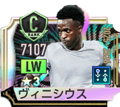
ヴィニシウス・ジュニオール〔2025-2026〕リアクション｜LW／サイドアタッカーⅢ15,811差 +176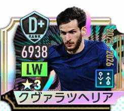
クヴィチャ・クヴァラツヘリアリアクション｜LW／サイドアタッカーⅢ15,704差 +69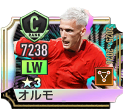
ダニ・オルモポゼッション｜LW／サイドアタッカーⅡ15,468差 -167同プレースタイルの代用・互換選手 各最大3名
代用：同ポリシー・適性位置・プレースタイル
互換：ポリシーを問わず同条件
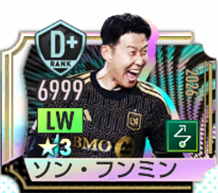
ソン・フンミン〔2026〕ムービング｜LW｜Lv215,658現在入手不可★3 SPが対象。LvⅡ選手にはLvⅡまたはⅢ、LvⅢ選手にはLvⅢのみを表示。入手可否は記事作成時点。
ブルーノ・フェルナンデス
高性能なパサー。でもフォメコン発動の鍵ではない。
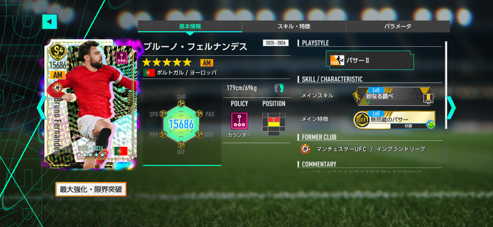
能力・スキルのポイント
6カテゴリは詳細17項目の合計。画像の能力値は所持特徴の発動時の数値で、上の最大総合力・実戦の補正後スコアとは別です。
- 無尽蔵のパサー金／発動条件：好調
- 精密なフィニッシュ銀／発動条件：好調
- 冷静なボールタッチ銅／発動条件：絶好調
スキル・詳細パラメータ画像を表示 2枚
ソニオTVの評価
ブルーノ・フェルナンデスは、カウンターのAMでパサーⅡを持つ貴重な選手。最大強化時の総合力も今回の4人で最も高く、PASの3項目合計は3,240。数値だけを見れば十分強いSP選手です。
それでもおすすめ度は★★☆☆☆。最大の理由は、「セレソン・ダス・キナス’26」のAM枠にパサー条件が指定されていないこと。つまり、ブルーノがいなくてもフォメコンの発動そのものには困りません。代用の自由度は高く、ジュード・ベリンガム、ロドリゴ・ベンタンクール、日本代表SPの三笘薫〔2026〕など、AM適性を持つ手持ち選手との比較が重要になります。
現行の最強編成を固定してAMだけ差し替えた補正後スコア比較では、ベリンガムとの差は576、ベンタンクールとの差は886。三笘では1,173差になるため、全員が1,000未満とは言えません。それでもブルーノを今すぐ大金を使って取りにいかなければ完成しない枠とは言いにくいです。
もちろん、現時点で希少なカウンターのAMパサーⅡという個性は残ります。今後の新フォメコンで条件に指定されれば見直す余地はあります。ただし、その実装は未確定。後の通常SPスカウトへの追加も可能性であって保証ではありません。未来の条件を先読みして今回追いかけるより、実装状況を見てから交換を考えたいという評価です。
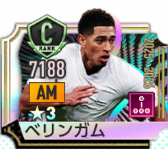
ジュード・ベリンガムカウンター｜AM／アタッカーⅢ15,749差 +63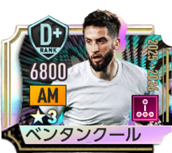
ロドリゴ・ベンタンクールカウンター｜AM／セントラルMFⅡ15,203差 -483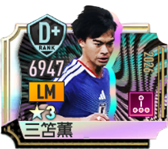
三笘薫〔2026〕カウンター｜LM／ドリブラーⅢ15,692差 +6同プレースタイルの代用・互換選手 各最大3名
代用：同ポリシー・適性位置・プレースタイル
該当する★3 SP選手なし
互換：ポリシーを問わず同条件
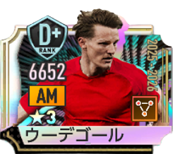
マルティン・ウーデゴールポゼッション｜AM｜Lv215,110入手可能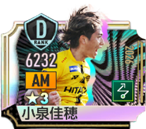
小泉佳穂(2026)ムービング｜AM｜Lv214,676入手可能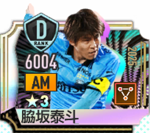
脇坂泰斗ポゼッション｜AM｜Lv214,399現在入手不可★3 SPが対象。LvⅡ選手にはLvⅡまたはⅢ、LvⅢ選手にはLvⅢのみを表示。入手可否は記事作成時点。
ベルナルド・シウバ
最強RW候補。ただしサラーや伊東純也との交換効率が焦点。
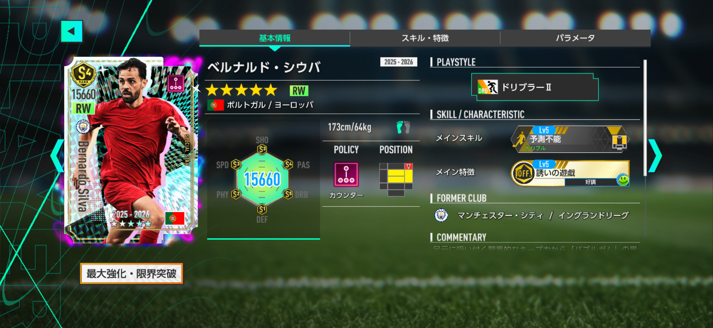
能力・スキルのポイント
6カテゴリは詳細17項目の合計。画像の能力値は所持特徴の発動時の数値で、上の最大総合力・実戦の補正後スコアとは別です。
- 誘いの遊戯金／発動条件：好調
- すり抜けるロングパサー銀／発動条件：絶好調
- 俊敏なキッカー銅／発動条件：好調
スキル・詳細パラメータ画像を表示 2枚
ソニオTVの評価
ベルナルド・シウバはRW／ドリブラーⅡのカウンターSP。最大強化時の総合力は15,660で、今回の4人ではブルーノに次ぐ数値です。PASとDRBが高く、ボールを前へ運びながら攻撃を組み立てる役割が見えてきます。
「セレソン・ダス・キナス’26」で最強編成を追うなら採用したい存在ですが、RWはコンボの発動条件枠ではありません。強さを評価する一方、引く優先順位は落ち着いて考えるべきです。
恒常★3SPのモハメド・サラーは同じカウンター／RWドリブラーⅡ。最大総合力差はわずか52です。日本代表SPの伊東純也〔2026〕もRW適性があります。現行の最強編成でRWだけ差し替えた補正後スコア差は、サラーが755、伊東が1,128。一律に1,000未満とは言えませんが、すでに育成・限界突破が進んでいるなら、ベルナルドを取りに行くコストは慎重に考えたいです。
一方で、ポルトガル国籍が金コンボの人数追加効果に貢献する点は見逃せません。「ベルナルドは強い。だが、持っているRWを置き換えるために今引くべきか」は別。この距離感が★★★☆☆の理由です。まずはサラーや伊東純也の所持状況と育成度をチェックしたいです。
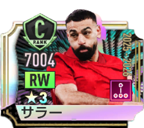
モハメド・サラーカウンター｜RW／ドリブラーⅡ15,608差 -52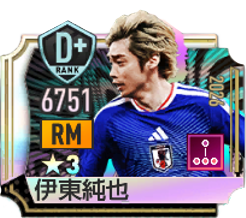
伊東純也〔2026〕カウンター｜RM／ドリブラーⅡ15,434差 -226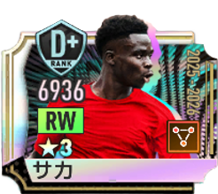
ブカヨ・サカポゼッション｜RW／ドリブラーⅢ15,587差 -73同プレースタイルの代用・互換選手 各最大3名
代用：同ポリシー・適性位置・プレースタイル
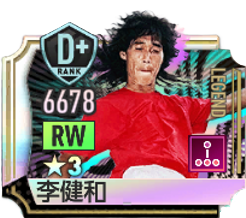
李健和〔LEGEND〕カウンター｜RW｜Lv215,265現在入手不可互換：ポリシーを問わず同条件
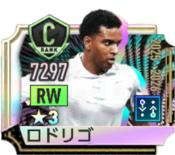
ロドリゴリアクション｜RW｜Lv215,532現在入手不可★3 SPが対象。LvⅡ選手にはLvⅡまたはⅢ、LvⅢ選手にはLvⅢのみを表示。入手可否は記事作成時点。
ヌーノ・メンデス
今回の最高評価は、唯一の銀スキルを持つこのLB。
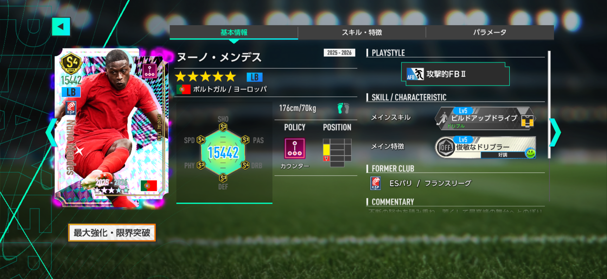
能力・スキルのポイント
6カテゴリは詳細17項目の合計。画像の能力値は所持特徴の発動時の数値で、上の最大総合力・実戦の補正後スコアとは別です。
- 俊敏なドリブラー銀／発動条件：好調
- 高速のボールタッチ銀／発動条件：好調
- 不屈の魂銅／発動条件：好調
スキル・詳細パラメータ画像を表示 2枚
ソニオTVの評価
4人の中で一番おすすめしたいのは、実はヌーノ・メンデスです。メインスキルは銀の「ビルドアップドライブ」。ほかの3選手が金スキルなので、見た目だけならハズレ枠に思えるかもしれません。それでも僕は★★★★★を付けます。評価したいのは、スキルの色よりもこの編成のLBで何ができるかだからです。
金フォメコン「セレソン・ダス・キナス’26」のLB条件は攻撃的FBⅡ。メンデスはその条件を満たし、さらにカウンター・ポルトガル一致。ほかのポジションの味方にかかる国籍追加補正まで考えると、存在感は決して小さくありません。
恒常★3SPのテオ・エルナンデス（ムービング／攻撃的FBⅡ）も条件を満たし、素の最大総合力ではテオが上回ります。しかし、現行最強編成のLBだけをテオに置き換えた補正後比較では、メンデスのほうが1,405高いという結果。単体総合力だけを比べると見落とす強みです。
数字の特徴もはっきりしています。DRB3項目合計は3,131で、テオの2,869より262高い。一方、DEFはテオの3,094に対しメンデスは2,874。守備重視ならテオ、攻撃とドリブルで局面を動かしたいならメンデスと、役割を分ける意味もあります。
ちなみにコンボ発動自体は、JリーグSPの前嶋洋太(2026)やウィークリーSP引換券のバロウズでも代用できます。だから「メンデスがいないと発動しない」わけではない。それでも最強編成と実戦の選択肢の両方で母体を確保しておく価値が高い。銀スキルでも今回トップ評価なのは、そこに理由があります。
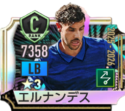
テオ・エルナンデスムービング｜LB／攻撃的FBⅡ15,649差 +207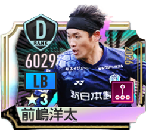
前嶋洋太(2026)カウンター｜LB／攻撃的FBⅡ14,469差 -973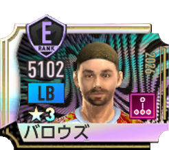
バロウズカウンター｜LB／攻撃的FBⅡ10,982差 -4,460同プレースタイルの代用・互換選手 各最大3名
代用：同ポリシー・適性位置・プレースタイル
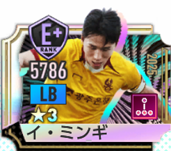
イ・ミンギカウンター｜LB｜Lv214,325現在入手不可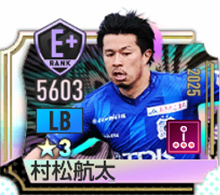
松村航太カウンター｜LB｜Lv214,190現在入手不可互換：ポリシーを問わず同条件
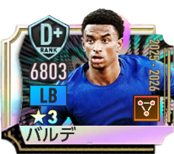
アレハンドロ・バルデポゼッション｜LB｜Lv215,399入手可能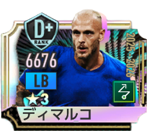
フェデリコ・ディマルコムービング｜LB｜Lv215,141入手可能★3 SPが対象。LvⅡ選手にはLvⅡまたはⅢ、LvⅢ選手にはLvⅢのみを表示。入手可否は記事作成時点。
まとめ｜ポルトガル最強を目指すか、今のカウンターを守るか
今回のガチャはカウンター強化を目指すなら「できれば引きたい」。しかし、プレミアムSPでセメドとヴィティーニャを確保できていないなら、そちらが先。クリロナのプレミアムSPをスルーしている監督は、このピックアップもスルーで問題ないと考えます。
一方、「セレソン・ダス・キナス’26」をポルトガルで染め、最強スコアを突き詰めたいならレオンとヌーノは重要。なかでも銀スキルのヌーノこそ★★★★★というのが今回の僕の結論です。ブルーノやベルナルドは数値が高くても、発動条件に必須ではない点を忘れないでください。
基本的には将来、通常SPスカウトに追加された場合の天井交換を待つ方針がおすすめです。ただし追加時期・追加自体は未確定。毎日の100RBはメダル変換も含めて検討できるので、少額でチャンスを拾いつつ今の編成を比べてみてください。
結局、目指すものが「使えるカウンター編成」なのか「ポルトガルで限界まで伸ばす最強編成」なのか。その答えが決まってから引く。今回はそれが最も大事なガチャだと思います。